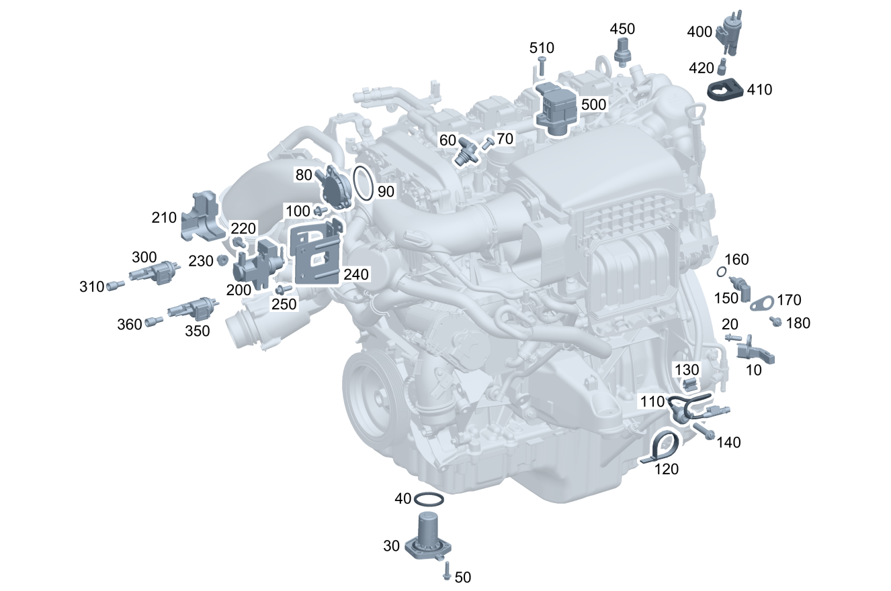

| № | Артикул | Название | Кол. | Примечание |
|---|---|---|---|---|
| 10 | A 270 905 00 43 | Датчик положения | 1 | Коленвал |
| 10 | A 270 905 06 00 | Датчик положения (POSITIONSSENSOR) | 1 | Коленвал |
| 10 | A 270 905 13 00 | Датчик положения (POSITIONSSENSOR) | 1 | Коленвал |
| 10 | A 270 905 12 00 | Датчик положения (POSITIONSSENSOR) | 1 | Коленвал |
| 20 | N 910142 006001 | Винт с 6-гр. глвк (SECHSRUNDSCHRAUBE) | 1 | M6X16 |
| 30 | A 001 153 13 32 | Выключатель уровня (FUELLSTANDSCHALTER) | 1 | Датчик уровня масла |
| 30 | A 001 153 13 32 | Выключатель уровня (FUELLSTANDSCHALTER) | 1 | Датчик уровня масла |
| 30 | A 001 153 13 32 | Выключатель уровня (FUELLSTANDSCHALTER) | 1 | Датчик уровня масла |
| 30 | A 001 153 13 32 | Выключатель уровня (FUELLSTANDSCHALTER) | 1 | Датчик уровня масла |
| 30 | A 654 905 06 00 | Датчик уровня (FUELLSTANDSSENSOR) | 1 | Датчик уровня масла |
| 30 | A 091 905 72 01 | Датчик уровня (FUELLSTANDSSENSOR) | 1 | Датчик уровня масла |
| 40 | A 012 997 73 45 | - Уплотнительное кольцо (DICHTRING) | 1 | TO A 001 153 13 32 |
| 40 | A 027 997 95 45 | - Кольцевая прокладка (O-RING) | 1 | TO A 001 153 13 32 |
| 40 | A 001 997 72 41 | - Уплотнительное кольцо (DICHTRING) | 1 | |
| 50 | N 000000 003648 | Винт с 6-гр. глвк (SECHSRUNDSCHRAUBE) | 3 | Датчик уровня масла к масляному поддону; M6X25 |
| 50 | N 000000 003648 | Винт с 6-гр. глвк (SECHSRUNDSCHRAUBE) | 3 | Датчик уровня масла к масляному поддону; M6X25 |
| 50 | N 910143 006001 | Винт с 6-гр. глвк (SECHSRUNDSCHRAUBE) | 2 | Датчик уровня масла к масляному поддону; M6X16 |
| 50 | N 910143 006001 | Винт с 6-гр. глвк (SECHSRUNDSCHRAUBE) | 1 | Штекер к масляному поддону; M6X16 |
| 60 | A 270 905 04 00 | Датчик положения (POSITIONSSENSOR) | 2 | Распределительный вал |
| 70 | N 000000 006469 | Винт с 6-гр. глвк (SECHSRUNDSCHRAUBE) | 2 | M6X14 |
| 70 | N 000000 001145 | Винт с 6-гр. глвк (SECHSRUNDSCHRAUBE) | 2 | M6X12 |
| 80 | A 276 156 04 90 | Электромагнит (ELEKTROMAGNET) | 2 | Механизм регулировки фаз газораспределения |
| 80 | A 276 156 07 90 | Электромагнит (ELEKTROMAGNET) | 2 | Механизм регулировки фаз газораспределения |
| 90 | A 016 997 50 45 | - Кольцевая прокладка (O-RING) | 2 | Механизм регулировки фаз газораспределения |
| 100 | A 000 990 95 06 | Винт Torx External (SCHRAUBE MIT SECHSRUND) | 6 | Механизм регулировки фаз газораспределения; M6X12 |
| 100 | A 000 990 39 24 | Винт Torx External (SCHRAUBE MIT SECHSRUND) | 6 | Механизм регулировки фаз газораспределения; M6X12 |
| 110 | A 270 905 02 00 | Датчик детонации (KLOPFSENSOR) | 1 | Без кабельного хвоста |
| 110 | A 270 905 09 00 | Датчик детонации (KLOPFSENSOR) | 1 | Без кабельного хвоста |
| 110 | A 270 905 09 00 | Датчик детонации (KLOPFSENSOR) | 1 | Без кабельного хвоста |
| 110 | A 270 905 10 00 | Датчик детонации (KLOPFSENSOR) | 1 | Без кабельного хвоста |
| 110 | A 270 905 10 00 | Датчик детонации (KLOPFSENSOR) | 1 | Без кабельного хвоста |
| 110 | A 270 905 07 00 | Датчик детонации (KLOPFSENSOR) | 1 | Без кабельного хвоста |
| 110 | A 270 905 09 00 | Датчик детонации (KLOPFSENSOR) | 1 | Без кабельного хвоста |
| 110 | A 007 153 04 28 | Датчик детонации (KLOPFSENSOR) | 1 | С кабельным хвостом |
| 110 | A 007 153 04 28 | Датчик детонации (KLOPFSENSOR) | 1 | С кабельным хвостом |
| 110 | A 007 153 04 28 | Датчик детонации (KLOPFSENSOR) | 1 | С кабельным хвостом |
| 110 | A 000 905 66 02 | Датчик детонации (KLOPFSENSOR) | 1 | С кабельным хвостом |
| 110 | A 000 905 84 03 | Датчик детонации | 1 | С кабельным хвостом |
| 110 | A 000 905 84 03 | Датчик детонации | 1 | С кабельным хвостом |
| 110 | A 000 905 66 02 | Датчик детонации (KLOPFSENSOR) | 1 | С кабельным хвостом |
| 110 | A 000 905 66 02 | Датчик детонации (KLOPFSENSOR) | 1 | С кабельным хвостом |
| 110 | A 000 905 73 03 | Датчик детонации (KLOPFSENSOR) | 1 | С кабельным хвостом |
| 110 | A 000 905 91 03 | Датчик детонации | 1 | С кабельным хвостом |
| 110 | A 000 905 73 03 | Датчик детонации (KLOPFSENSOR) | 1 | С кабельным хвостом |
| 110 | A 000 905 73 03 | Датчик детонации (KLOPFSENSOR) | 1 | С кабельным хвостом |
| 110 | A 000 905 73 03 | Датчик детонации (KLOPFSENSOR) | 1 | С кабельным хвостом |
| 110 | A 000 905 73 03 | Датчик детонации (KLOPFSENSOR) | 1 | С кабельным хвостом |
| 110 | A 000 905 91 03 | Датчик детонации | 1 | С кабельным хвостом |
| 110 | A 000 905 91 03 | Датчик детонации | 1 | С кабельным хвостом |
| 110 | A 000 905 90 03 | Датчик детонации (KLOPFSENSOR) | 1 | С кабельным хвостом |
| 110 | A 000 905 90 03 | Датчик детонации (KLOPFSENSOR) | 1 | С кабельным хвостом |
| 110 | A 000 905 91 03 | Датчик детонации | 1 | С кабельным хвостом |
| 110 | A 000 905 84 03 | Датчик детонации | 1 | С кабельным хвостом |
| 110 | A 000 905 90 03 | Датчик детонации (KLOPFSENSOR) | 1 | С кабельным хвостом |
| 120 | A 006 997 35 90 | - Кабельная стяжка (KABELBINDER) | 2 | Датчик детонации; 2.5X100 MM |
| 130 | A 005 988 35 78 | Скоба (KLAMMER) | 1 | Датчик детонации; 15 X 14.5 MM |
| 130 | A 005 988 35 78 | Скоба (KLAMMER) | 1 | Датчик детонации; 15 X 14.5 MM |
| 140 | N 000000 001392 | Винт с 6-гр. глвк (SECHSRUNDSCHRAUBE) | 2 | |
| 150 | A 000 905 06 00 | Датчик температуры (TEMPERATURSENSOR) | 1 | К головке блока цилиндров |
| 150 | A 099 905 37 00 | Датчик температуры (TEMPERATURSENSOR) | 1 | К головке блока цилиндров |
| 150 | A 000 905 61 02 | Датчик температуры (TEMPERATURSENSOR) | 1 | К головке блока цилиндров |
| 150 | A 000 905 61 02 | Датчик температуры (TEMPERATURSENSOR) | 1 | К головке блока цилиндров |
| 160 | A 022 997 98 48 | - Уплотнительное кольцо (DICHTRING) | 1 | |
| 170 | A 272 078 02 41 | Держатель (HALTER) | 1 | |
| 180 | N 910143 006001 | Винт с 6-гр. глвк (SECHSRUNDSCHRAUBE) | 1 | Датчик температуры к головке блока цилиндров; M6X16 |
| 200 | A 008 153 54 28 | Преобразователь давления (DRUCKWANDLER) | 1 | Давление наддува |
| 200 | A 010 153 13 28 | Преобразователь давления (DRUCKWANDLER) | 1 | Давление наддува |
| 200 | A 000 153 18 00 | Преобразователь давления (DRUCKWANDLER) | 1 | Давление наддува |
| 210 | A 274 078 00 98 | Демпфирующий элемент (DAEMPFUNGSELEMENT) | 1 | К преобразователю давления |
| 210 | A 274 226 23 00 | Шумоизоляция (GERAEUSCHISOLIERUNG) | 1 | К преобразователю давления |
| 220 | N 910143 006001 | Винт с 6-гр. глвк (SECHSRUNDSCHRAUBE) | 2 | Преобразователь давления к кронштейну; M6X16 |
| 240 | A 274 078 00 41 | Держатель (HALTER) | 1 | Преобразователь давления к блоку цилиндров |
| 240 | A 274 078 06 41 | Держатель (HALTER) | 1 | Преобразователь давления к блоку цилиндров |
| 240 | A 274 078 03 41 | Держатель (HALTER) | 1 | Преобразователь давления к блоку цилиндров |
| 240 | A 274 078 05 00 | Держатель (HALTER) | 1 | Преобразователь давления к блоку цилиндров |
| 240 | A 274 078 12 41 | Держатель (HALTER) | 1 | Преобразователь давления к блоку цилиндров |
| 240 | A 274 078 12 41 | Держатель (HALTER) | 1 | Преобразователь давления к блоку цилиндров |
| 240 | A 274 078 12 41 | Держатель (HALTER) | 1 | Преобразователь давления к блоку цилиндров |
| 250 | N 910143 006001 | Винт с 6-гр. глвк (SECHSRUNDSCHRAUBE) | 3 | Держатель к блоку цилиндров; M6X16 |
| 250 | N 000000 000276 | Винт с 6-гр. глвк (SECHSRUNDSCHRAUBE) | 2 | Держатель к блоку цилиндров; M8X20 |
| 300 | A 002 540 70 97 | Переключающий клапан (UMSCHALTVENTIL) | 1 | Подключаемые водяной насос |
| 300 | A 002 540 70 97 | Переключающий клапан (UMSCHALTVENTIL) | 1 | Подключаемые водяной насос |
| 310 | A 117 078 09 81 | Сетчатый фильтр (SIEBEINSATZ) | 1 | К переключающему клапану |
| 310 | A 117 078 09 81 | Сетчатый фильтр (SIEBEINSATZ) | 1 | К переключающему клапану |
| 350 | A 002 540 70 97 | Переключающий клапан (UMSCHALTVENTIL) | 1 | Запорный клапан |
| 360 | A 117 078 09 81 | Сетчатый фильтр (SIEBEINSATZ) | 1 | К переключающему клапану |
| 400 | A 002 540 70 97 | Переключающий клапан (UMSCHALTVENTIL) | 1 | |
| 400 | A 002 540 70 97 | Переключающий клапан (UMSCHALTVENTIL) | 1 | |
| 400 | A 002 540 70 97 | Переключающий клапан (UMSCHALTVENTIL) | 1 | |
| 400 | A 000 500 32 01 | Переключающий клапан (UMSCHALTVENTIL) | 1 | |
| 400 | A 002 540 70 97 | Переключающий клапан (UMSCHALTVENTIL) | 1 | |
| 410 | A 901 493 00 40 | Держатель (HALTER) | 1 | |
| 420 | A 117 078 09 81 | Сетчатый фильтр (SIEBEINSATZ) | 1 | К переключающему клапану |
| 420 | A 117 078 09 81 | Сетчатый фильтр (SIEBEINSATZ) | 1 | К переключающему клапану |
| 420 | A 117 078 09 81 | Сетчатый фильтр (SIEBEINSATZ) | 1 | К переключающему клапану |
| 420 | A 117 078 09 81 | Сетчатый фильтр (SIEBEINSATZ) | 1 | К переключающему клапану |
| 450 | A 270 905 03 00 | Датчик давления (DRUCKSENSOR) | 2 | Система рециркуляции ОГ |
Позиций: 97 · подписано на схемах: 97 · колесо — плавный зум в курсор, перетаскивание — пан, двойной клик — зум, клик по артикулу — скопировать.